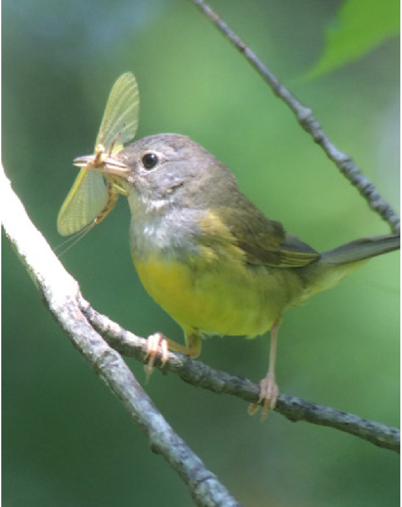
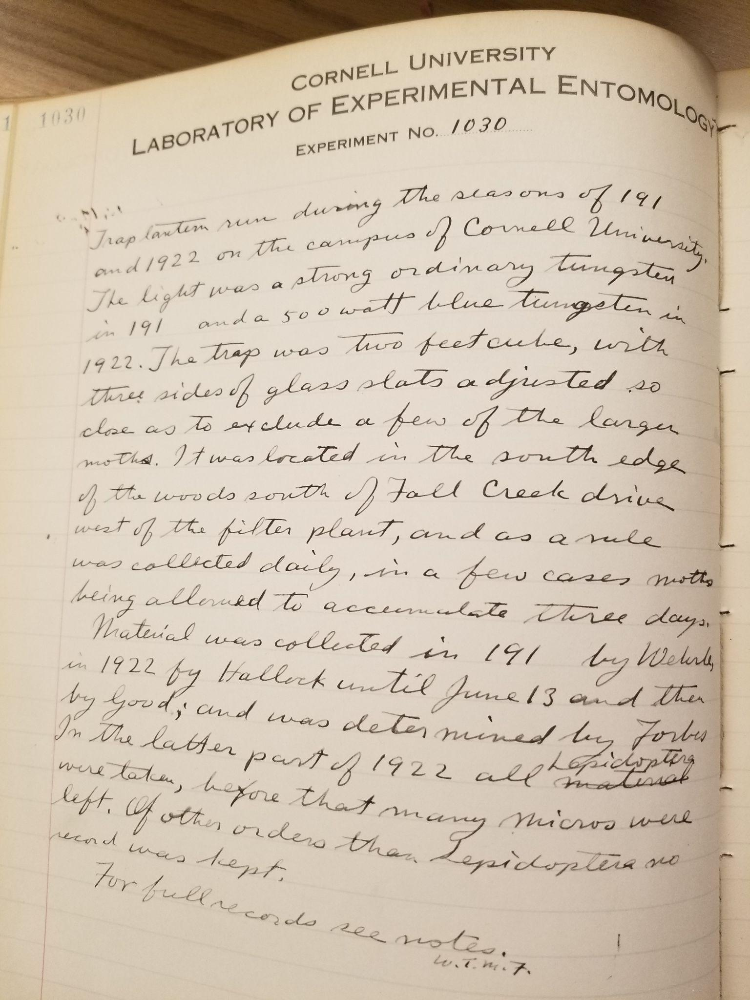

Disentangling drivers of insect biodiversity loss
 Insects are declining at estimated rates of 1-2% per year as a result of a myriad of stressors: habitat loss and degradation, agricultural intensification, urbanization, pesticide use, climate change including changes in precipitation regimes and extreme temperatures, light pollution, and many more drivers. Understanding how global change affects insect populations, and which stressors contribute most to insect declines, for which taxa, and in which habitats is critical for prioritizing conservation actions that directly target the most critical drivers of biodiversity loss. We work to disentangle the effects of anthropogenic stressors on insect biodiversity through a variety of approaches including simulation, meta-analysis and synthesis, data integration from local to continental scales, and systematic monitoring of insects across multidimensional stressor gradients.
Insects are declining at estimated rates of 1-2% per year as a result of a myriad of stressors: habitat loss and degradation, agricultural intensification, urbanization, pesticide use, climate change including changes in precipitation regimes and extreme temperatures, light pollution, and many more drivers. Understanding how global change affects insect populations, and which stressors contribute most to insect declines, for which taxa, and in which habitats is critical for prioritizing conservation actions that directly target the most critical drivers of biodiversity loss. We work to disentangle the effects of anthropogenic stressors on insect biodiversity through a variety of approaches including simulation, meta-analysis and synthesis, data integration from local to continental scales, and systematic monitoring of insects across multidimensional stressor gradients.
Featured project: To build a better picture of the drivers of insect decline and how they are interconnected, we are working on a meta-synthesis of the hypothesized drivers of insect decline, led by lab post-doc Dr. Chris Halsch. We reviewed the 175 reviews, commentaries, perspectives, and meta-analyses that have been published on the causes of insect decline since 2017 and extracted hypothesized drivers of decline as directed acyclic graphs. We merged all of these potential drivers into a synthesized network of linked causes of declines. Future work will focus on meta-analyses of identified drivers that lack a formal quantitative synthesis. Stay tuned for updates (manuscript is in press).
Consequences of insect decline for insectivorous birds
Insect declines could have enormous consequences for insectivorous birds and other taxa that rely on insects as a food resource. Nearly all landbirds, including those we do not normally think of as insectivorous (e.g. hummingbirds, sparrows) rely on insects during the breeding season to provide critical protein resources for chick rearing. Understanding how insect declines will impact other taxa and the potential cascading effects is a central goal of our research, including direct impacts of declining insect abundance on bird reproductive success, phenological mismatch between insects and birds, and shared responses to anthropogenic stressors. Collaboration with ornithologists is also critically important for insect conservation, as there are often long-term insect time series datasets collected as 'bird food', it is often easier to garner public conservation support for birds, and there are many conservation actions that benefit both birds and insects.
Featured project: Parallel declines in insects and insectivorous birds over the past half century have led to speculation that a leading driver of bird biodiversity loss is declines in their insect prey. To understand how decreased food supply as a result of insect declines could affect bird populations, we used meta-analytic structural equation modeling to estimate the effects of insect food availability on bird body condition and reproductive success. We found that insect food availability has a strong, positive effect on both insect reproductive success and chick body condition, suggesting that declines in insect abundance and biomass could have devastating consequences for taxa that rely on insects as food. Read more in Grames et al. (2023) Ecology Letters.
Using historical data to understand long-term biodiversity changes
Since the start of the Industrial Revolution, there has been a rapid increase in the rate of anthropogenic changes to earth system processes, including nearly exponential increases in atmospheric carbon dioxide concentrations and subsequent increase in global temperatures, exponential rates of deforestation and other forms of land use change, and resource consumption. Despite anthropogenic changes having impacts on biodiversity for centuries, nearly all of the long-term ecological research and biodiversity monitoring efforts were initiated in recent decades. To get a better picture of baseline biodiversity and ecosystem function, we seek out and use historical datasets of insect and bird populations and communities to understand how they have changed over the past century.
Featured project: Currently, we are working on a project, led by former lab Honors Student Emma Foster (now at the University of Michigan), to understand how moth phenology has shifted over the past 135 years. Emma digitized moth phenology records from a trap lantern run on the campus of Cornell University in 1889 and 1892, and from a light trap run at the exact same location thirty years later in 1919 and 1922. For nearly 200 species, she compared changes in moth phenology historically to modern phenology estimated from light traps operated by collaborator Jason Dombroskie (Cornell University) and iNaturalist records. She found that species were not flying earlier in the year than they were historically, however, many species were active much later in the year; this phenological shift was largely due to changes in voltinism, with some species that historically only had one brood which now have two or even three generations per year. Stay tuned for updates (manuscript is in review).
Developing methods to support large-scale evidence synthesis
Synthesizing what is already known about a topic and building on previous work is a key stage in the scientific process, however, an ever-expanding body of literature makes it challenging to systematically identify and analyze existing evidence. We are developing new methods of evidence synthesis to help cope with the explosion of scientific literature while still applying systematic principles to promote transparency and reduce bias when conducting literature reviews and meta-analyses. We are largely focused on applying principles of study design to all types of synthesis, including conceptual model development and syntheses with undefined question components, reducing time and effort for syntheses on broad topics through automation, decision rules for screening effort, and stopping criteria, and increasing transparency and inclusivity in the synthesis process through community-driven evidence synthesis.
Featured project: The EntoGEM project is a project to systematically identify and catalogue multi-year insect population and community datasets that can be used to help understand rates of insect biodiversity loss and drivers of declines, and to fill in the geographic gaps in knowledge. Because the insect literature is vast and heterogeneous, we searched sixteen databases with an exhaustive set of search terms (including over 1500 synonyms for 'insect' and dozens of terms indicating population and community time series datasets), resulting in over 130,000 unique publications that may contain data to help understand insect decline. With collaborator Chris Elphick (University of Connecticut) we are developing new methods to increase speed of screening articles and extracting metadata, including AI approaches to abstract screening, and approaches for dealing with an ever-growing volume of literature. Read more about some of these approaches in Grames et al. (2022) Conservation Science & Practice.